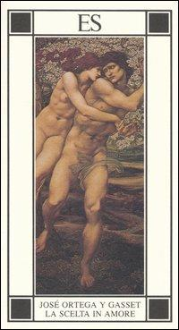
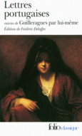

38:13 · 7 OPERE
La scelta in Amore
Il filo del discorso
La lettura di La scelta in amore di José Ortega y Gasset offre lo spunto per interrogare ciò che una preferenza amorosa rivela di chi ama. Il relatore riconosce i limiti storici e le generalizzazioni del libro, ma ne valorizza l’attenzione al carattere e all’interiorità. Alla scelta intesa come ricerca di requisiti contrappone l’incontro che sorprende, simile a una musica o a un libro che sembrano trovare il loro ascoltatore.
Leggi la sintesi completaRiduci la sintesi
Gli annunci sentimentali, confrontati con quelli delle automobili, diventano l’immagine di una mentalità che misura le persone come oggetti. Le parole di Ortega sul cuore e sulle opinioni ricevute dal contesto sociale sono accostate a Matteo e ai due libri di Fromm consigliati in apertura. Il Simposio accompagna poi la riflessione sulla bellezza e sulla generazione. La critica si allarga alle spiegazioni esclusivamente meccaniche dell’essere umano e alla perdita del senso di scelta e responsabilità. Un racconto non identificato sull’incontro in stazione introduce l’amore ideale, mentre la seconda parte torna a Ortega per distinguere desiderio, possesso e amore come movimento non definitivamente appagato. Il finale delle Lettere portoghesi mostra la passione nella sua intensità e nella sua ambivalenza. La scheda presenta questo percorso come una interpretazione filosofica, distinguendolo dalle questioni scientifiche, storiche e filologiche che richiedono riscontri autonomi.
I libri nel discorso

La scelta in amore
Note sul riferimento
Copertina: Copertina dell’edizione ES, Piccola biblioteca dell’eros, 4 maggio 2006, 88 pagine, traduzione di Elena Carpi Schirone. L’edizione nominata nel video è SE, Milano, 1997, Piccola enciclopedia 121, ISBN 9788877103604.
Copertina autentica ES con coppia abbracciata, cornice geometrica, marchio ES e autore/titolo nella fascia inferiore. È l’edizione 2006, diversa da quella SE 1997 nominata. L’immagine bianca del primo catalogo, non sufficientemente autenticata, è stata rifiutata; non si attribuisce all’immagine ES l’ISBN SE.
Titolo, autore José Ortega y Gasset, editore SE e anno 1997 espliciti; più passi letti nel corso del contributo.

La ribellione delle masse (La rebelión de las masas)
Note sul riferimento
Copertina: Immagine dell’edizione spagnola Lucemar, catalogo Plutón, 19 febbraio 2026, 288 pagine, brossura. Opera pubblicata in volume nel 1930, dopo articoli del 1929.
Copertina autentica Lucemar, titolo nero e autore rosso su celle esagonali chiare, una cella rossa e un’ape. Edizione di riferimento 2026, non attribuita al filmato. I tentativi sul catalogo universitario e sull’immagine Planeta non hanno avuto esito; non si riporta il dato palesemente incongruo di tre pagine presente nella scheda Espasa.
Opera più nota di Ortega esplicitamente richiamata; trascrizione automatica ripetione delle masse normalizzata dal contesto.

L’arte di amare
Note sul riferimento
Copertina: Mondadori · Oscar Absolute · 2016 · traduzione di Marilena Damiani
Copertina autentica di riferimento, controllata visivamente. L’edizione non è identificata come quella usata nel video.
L’arte di amare di Erich Fromm esplicitamente consigliato.

Avere o essere?
Note sul riferimento
Copertina: Immagine dell’edizione Mondadori, 17 gennaio 2025, 252 pagine, traduzione di Francesco Saba Sardi. La grafica riporta Oscar Moderni. Originale To Have or to Be?, 1976.
Copertina autentica con cerchi blu, forme grigie, autore e titolo neri, marchio Oscar Moderni arancio e Mondadori. Il catalogo commerciale usa anche la denominazione Sophia: si descrive il marchio effettivamente visibile senza sostituirlo con una collana dedotta. Nessuna edizione particolare è certificata nel video.
Avere o essere? di Erich Fromm esplicitamente consigliato e ripreso nel discorso.

Bibbia
Note sul riferimento
Copertina: San Paolo, 2014 · Nuova Versione dai Testi Antichi · edizione di riferimento
Bibbia esplicita nell’esempio della bibliomanzia; poi Matteo e il tesoro del cuore a circa 792 secondi.

Simposio
Note sul riferimento
Copertina: Adelphi · Piccola Biblioteca 81 · 1979
Copertina autentica dell’edizione di riferimento, controllata visivamente. Non identifica l’esemplare letto o citato nel video.
Simposio di Platone esplicito; generazione nel bello e successivo mito delle due metà.

Lettere portoghesi (Lettres portugaises)
Note sul riferimento
Copertina: Immagine dell’edizione Lettres portugaises / Guilleragues par lui-même, Gallimard, Folio classique 2154, 2 maggio 1990, 224 pagine, edizione Frédéric Deloffre. Contiene le lettere e altro materiale dichiarato nel titolo.
Copertina autentica Folio con ritratto di donna scuro, titolo Lettres portugaises, indicazione del testo Guilleragues par lui-même e curatela Deloffre. È un volume che comprende altro materiale, non la sola prima edizione anonima del 1669. Non si presenta come documento autobiografico sicuramente scritto dalla religiosa.
Lettere di Mariana Alcoforado esplicite, autenticità dichiarata incerta dal relatore; il passo è riscontrato nella terza delle Lettere portoghesi.